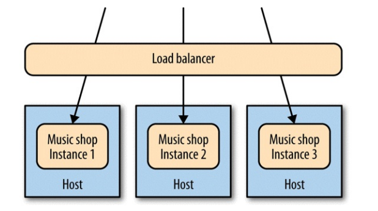
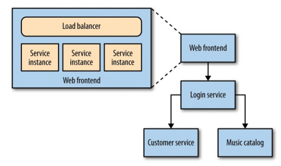

Monitoring¶
Breaking our system up in microservices adds complexity in the monitoring process. The answer is to add monitoring at a single service level and then aggregate the data, because eventually there are gonna be too many services for manual monitoring.
In microservices, monitoring can help you efficiently scale your system too.
Single Service, Single Server¶
Let's first consider the simplest setup: one host, running one service. What should we monitor?
- The host (e.g. CPU and memory usage).
- The logs of the server, so when a user reports an error we can pinpoint it to a log record.
- The application (e.g. response times).
Single Service, Multiple Servers¶
Now there multiple copies of the service running on separate hosts, behind a load balancer.

What should we monitor?
- The hosts, both individually and by aggregating data: it would be useful to determine if memory usage is due to a software bug or to a rogue OS process.
- The logs can still be saved on each host. We would be able to easily navigate them via tools like ssh-multiplexers.
- The load balancer can help with aggregating data for tasks like response time tracking. Ideally the load balancer should be able to tell if a microservice is healthy and remove it if that's not the case.
Multiple Services, Multiple Servers¶
Multiple services are providing capabilities to our users, and those services are running on multiple hosts — be they physical or virtual.

In this case we would need specific subsystems to aggregate (e.g. Logstash, Graphite) and visualize (e.g. Kibana) data.
Service Metrics¶
Ideally your service should expose basic metrics too (e.g. invoices emitted per day).
The benefits are:
- You can detect which features of a service are actually used in production.
- You can react to how your users are using your system in order to improve it.
- It's hard to know what data will be useful when you first deploy your system.
Synthetic Monitoring¶
It's about monitoring systems acting like users and reporting back issues if they occur.
For example, out monitoring system could publish a message in a queue from time to time and track how the system behaves when handling that message. If any issues are found, they are reported and we would be able to debug them because we have low-level monitoring in place too. Sending this fake message is an example of a synthetic transaction used to ensure the system was behaving semantically, which is why this technique is often called semantic monitoring.
But how to implement semantic monitoring? We can reuse the code in our tests and run a subste of it against the production system. You must carefully check the data requirements and ensure that no side effects are going to take place. A common solution is to enable a set of fake users that will perform synthetic transaction in production.
Correlation IDs¶
With a large number of services, a single initiating call can end up generating multiple more downstream service calls.
How to track these calls?
A possible solution is to use correlation IDs: when the first call is made, you generate a GUID for the call. This is then passed along to all subsequent calls.
It would be better to adopt correlation ids from the start, because it's usually very hard to retro fit call logs with correlation ids.
Also note that using correlation IDs justifies the development of a client library shared between microservices, because it would simplify communication a lot. Just remember to keep these shared libraries as thin as possible to avoid any kind of coupling.
Cascading Failures¶
Cascading failures can be especially perilous. Imagine a situation where a service cannot communicate with a downstream service while they both look healthy.
Using synthetic monitoring would pick up the problem. But we’d also need to report on the fact that one service cannot see another in order to determine the cause of the problem. Therefore, monitoring the integration points between systems is fundamental. Each service instance should track and expose the health of its downstream dependencies, from the database to other collaborating services.
Standardization¶
One of the ongoing balancing acts you’ll need to pull off is where to allow for decisions to be made narrowly for a single service versus where you need to standardize across your system. Monitoring is one area where standardization is incredibly important, because it allows for easy data aggregation and monitoring.
Consider the audience¶
It's fundamental to display data according to who is going to consume it (e.g. sysops can consume bulks of system-level logs while a manager is going to need a dashboard to visualize business-related metrics).
Summary¶
For each service:
- Track inbound response time at a bare minimum. Once you’ve done that, follow with error rates and then start working on application-level metrics.
- Track the health of all downstream responses, at a bare minimum including the response time of downstream calls, and at best tracking error rates.
- Standardize on how and where metrics are collected.
- Log into a standard location, in a standard format if possible. Aggregation is a pain if every service uses a different layout!
- Monitor the underlying operating system so you can track down rogue processes and do capacity planning.
For the system:
- Aggregate host-level metrics like CPU together with application-level metrics.
- Ensure your metric storage tool allows for aggregation at a system or service level, and drill down to individual hosts.
- Ensure your metric storage tool allows you to maintain data long enough to understand trends in your system.
- Have a single, queryable tool for aggregating and storing logs.
- Strongly consider standardizing on the use of correlation IDs.
- Understand what requires a call to action, and structure alerting and dashboards accordingly.
- Investigate the possibility of unifying how you aggregate all of your various metrics.